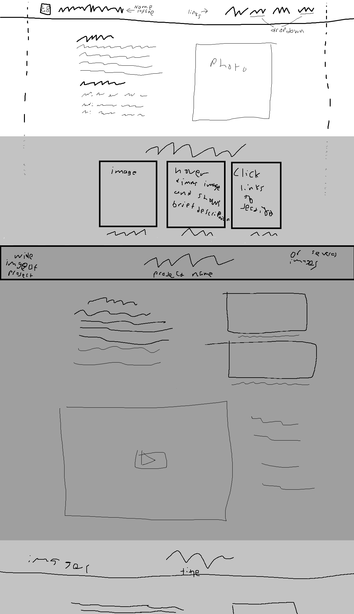

Auto generated from markdown.
Ideas brain dump
- Tagline idea: biohacking game developer
- Header nav bar: logo, name/tag, flexible spacing, About, Projects, Resume, Contact, links
- Dropdown nav items where appropriate
- Maybe use an unfocused screenshot of bankshot project as a background or maybe something similar to the dangerousthings.com background or maybe just a color probably dark
- Photo and about me first. Add a kind of skills section if room.
- Next a gallery of projects with quick descriptions. Maybe images or gifs with descriptions on hover.
- Start sections for projects with a similar layout to that in inspiration.

Inspirations
Sources
Images
Fonts
Prototypes and feedback
Prototype 1
Prototype feedback
- General positive response to progress so far.
- Projects might be a little small.
- Details on hover is cool.
- Unclear how room will be made for more projects.
- Proximity is used well.
- Colors (although not final) were well received.
- Text contrasts well against dark background.
- Suggested to change projects background to a similar hue to the header.
- Alignment was inconsistent but not necessarily bad.
- Suggested to align future project sections like about section.
- Navigation is simple and straightforward.
- Dropdowns were liked but need a background. Suggested to use the same blur and dim as the gallery.
- Currently not responsive at all.
- Code is neat and readable.
- Suggested that the tag line shouldn't be in your header, it doesn't fit well and doesn't belong with the current design.
- Others liked the tagline in the header.
- Need fonts other than the default. something blocky maybe.
- Reduce nav bar padding (3vw seems better)
- Add more space between name and logo
- Use a background instead of solid color. Big triangle of vibrant color left of about to mid of header as an idea. Add other random shapes to fill space.
- On that note, keep the background asymmetric.
- Darken the background of gallery, navy blue maybe.
- Square off about me.
- Maybe have dark faded symbol behind about me.
- Try to design with non linear background but boxy words and pics.
- Essentially make background varying but text and such sharp and boxy.
{kind=link}
{kind=link}
{kind=link}
{kind=link}
{kind=link}
{kind=link}
{kind=link}
{kind=link}
{kind=link}
{kind=link}